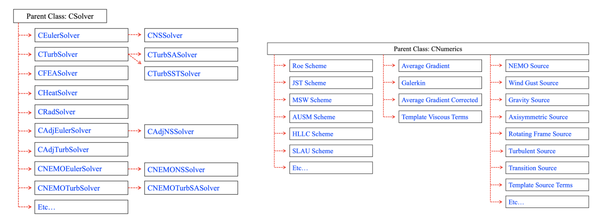
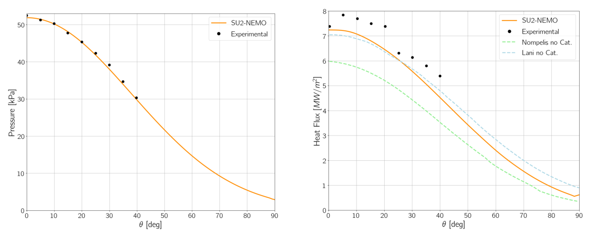
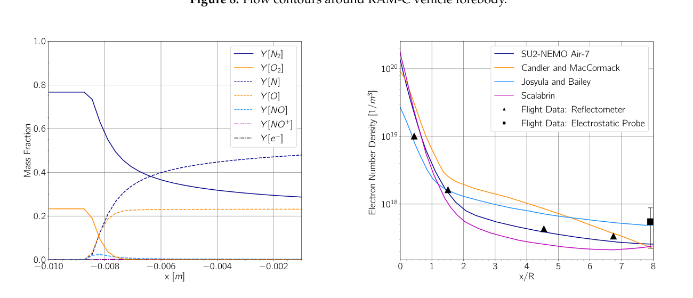
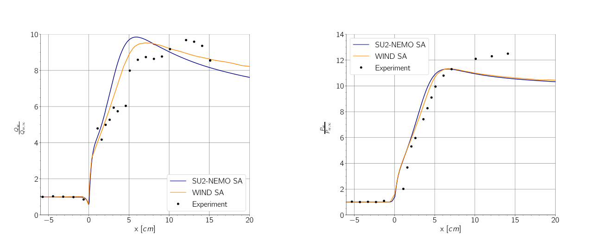

01中文摘要
本文介绍 SU2-NEMO——开源多物理场软件 SU2 面向高焓、高马赫数多组分流动的扩展模块。文章说明其采用的热非平衡与有限速率化学模型，以及与 Mutation++ 物理化学库的接口；介绍为保证模块化而设计的软件架构，使新模型能够高效接入；评述控制方程数值离散和对流通量格式；并给出一系列二维和三维验证算例，展示求解器在复杂非平衡流动中的性能。该工作为高超声速气动热数值研究提供了开放、可扩展的计算平台。
原始摘要（英文/原文）
SU2-NEMO, a recent extension of the open-source SU2 multiphysics suite’s set of physical models and code architecture, is presented with the aim of introducing its enhanced capabilities in addressing high-enthalpy and high-Mach number flows. This paper discusses the thermal nonequilibrium and finite-rate chemistry models adopted, including a link to the Mutation++ physio-chemical library. Further, the paper discusses how the software architecture has been designed to ensure modularity, incorporating the ability to introduce additional models in an efficient manner. A review of the numerical formulation and the discretization schemes utilized for the convective fluxes is also presented. Several test cases in two- and three-dimensions are examined for validation purposes and to illustrate the performance of the solver in addressing complex nonequilibrium flows.
02阅读说明
软件框架/数值方法论文，附多组验证与确认（V&V）算例，不是单一物理问题研究。材料为Aerospace 2021, 8, 193全文29页，含题录、图件清单、表1–9及附录A1–A3；bundle中公式文本层错位严重，已用原PDF第5–8页核对式(1)–(27)、第9–11页核对式(28)–(38)。图4、5、15–18未列入抓图清单，相关曲线仅按正文数值引用，未读图取值。 文章类型：期刊
03一句话核心与三句话摘要
SU2-NEMO将双温度热化学非平衡模型集成进开源SU2，经热浴、HEG、RAM-C、ASWBLI、滑移与X-43a算例验证。
- 高超声速流动中热化学非平衡效应随焓值升高而显著，LAURA、DPLR、US3D等成熟求解器多为闭源或面向特定网格，开源代码在模型完备性与设计优化能力上仍有缺口。 AI概括
- 作者在开源多物理场框架SU2上构建SU2-NEMO：扩展守恒变量与通量类，加入RRHO双温度模型、Landau–Teller/Park松弛、Park 1990有限速率化学、Fick/Stefan–Maxwell输运、SA湍流与Maxwell–Smoluchowski滑移边界，并耦合Mutation++。 原文明确
- 零维热浴、HEG圆柱、RAM-C、轴对称SWBLI、滑移圆柱和X-43a六类算例表明：平衡温度与LeMANS一致，HEG压力近乎重合、驻点热流比Lani高2.79%，ASWBLI热流峰值比WIND-US高3.46%，滑移峰值误差低于6%，验证了框架的跨流域预测能力。 AI概括
04核心内容清单
| 要点 | 类型 | 重要性 | 原文依据 | 属性 |
|---|---|---|---|---|
| 提出并实现了开源框架SU2-NEMO：在SU2的CSolver/CFluidModel/CNumerics类体系中扩展多组分热化学非平衡能力，任意气体模型可在不改动求解器/变量/数值类的情况下接入。 | 框架贡献 | A | 第3–4页，第2节，图1–图3 | 原文明确 |
| CNEMOGas下提供原生CSU2TCLib与Mutation++的CMutationTCLib两条热化学库路径；后者在本算例中快3–4.3倍（N2热浴26.38 s对73.1 s；Air-5 35.6 s对154.6 s）。 | 性能/架构 | A | 第3–4、12–14页 | 原文明确 |
| 采用RRHO双温度模型：平动–转动平衡于T、振动–电子平衡于Tve，转动按刚体、振动按简谐振子处理，忽略模式间耦合。 | 物理模型 | A | 第6–7页，3.1节，式(3)–(8) | 原文明确 |
| N2与Air-5零维热浴中所有模型分别于10⁻⁶ s、3.5×10⁻⁷ s达到7500 K、6200 K平衡温度，与LeMANS一致。 | 验证结果 | A | 第12–14页，5.1节，表1、表2 | 原文明确 |
| 优先/非优先离解模型差异在Air-5中显著：非优先Tve峰值高11.3%（SU2）与11.8%（LeMANS），10⁻⁸ s原子氧14.91%/13.27%对LeMANS 17.48%/15.42%。 | 定量对比 | A | 第13–14页，表3 | 原文明确 |
| HEG圆柱表面压力与实验近乎完全吻合，热流略低（归因于无表面催化）；热流峰值比Lani的非催化结果高2.79%，驻点区最接近实验。 | 验证结果 | A | 第14–15页，5.2节，图7 | 原文明确 |
| RAM-C电子数密度在x/R≈1后与Scalabrin及反射计测量强吻合，鼻区偏低被归因于双温度模型合并振动与电子能级。 | 验证结果/局限 | A | 第16–17页，5.3节，图9 | 原文明确 |
| ASWBLI中SU2-NEMO热流峰值达参考值9.85倍、比WIND-US高3.46%，两种数值结果均低估斜面上压力、未捕捉12 cm处第二热流峰。 | 验证结果 | A | 第18–20页，5.4节，图13 | 原文明确 |
| 滑移模型在Kn=0.01时与DSMC吻合良好；Kn=0.05时峰值热流高4.97%、摩阻高6.05%、压力高0.93%，仍属可接受范围。 | 验证结果 | A | 第20–22页，5.5节，表8 | 原文明确 |
| X-43a类外形上5级各向异性自适应网格捕捉了前缘斜激波、进气道第二道斜激波、尾翼激波–激波/激波–表面干扰；该条件下N/O/NO+可忽略。 | 演示结果 | B | 第22–24页，5.6节，图19、图20 | 原文明确 |
| SA模型并非为多组分流动设计，不区分各组分密度，本文仅以总密度Σρs闭合，湍流模型仍是SU2-NEMO持续研发方向。 | 模型局限 | B | 第9页，3.4节，式(24) | 原文明确 |
| 当前壁面边界只有非催化等温/热流壁、Euler壁与滑移壁，表面催化反应模型尚在开发，这直接限制了再入热流的定量精度。 | 模型局限 | B | 第10页，4.2节；第14页 | AI概括 |
05引言：研究问题与领域缺口
大气进入与高超声速飞行器设计中，CFD用于试验规划、数据还原和设计分析；随着流动焓值升高，热化学非平衡效应越来越重要，给求解器的稳定性、鲁棒性和效率带来新挑战（第2页）。作者回顾了Gnoffo与McCandless的松耦合化学源项、NASA Langley的LAURA、NASA Ames的DPLR（沿壁面法向线松弛）、US3D（非结构网格、混合网格与线/点松弛）等求解器，以及开源代码hy2Foam（OpenFOAM内耦合DSMC-CFD、双温度、五组分空气）和COOLFluiD（VKI/KU Leuven，非结构网格多物理）（第2页）。作者指出SU2本身面向PDE约束优化、具备离散伴随，可弥补现有开源高超声速代码在设计优化方面的不足；SU2-NEMO即为在SU2中扩展多组分反应流守恒方程、热化学非平衡模型的产物（第2–3页）。论文目标是给出代码结构、本构物理模型、数值实现，并用典型算例做V&V，最后用复杂外形展示面向未来设计优化的能力（第3页）。
06流动条件与几何构型
| 项目 | 数值/描述 | 依据 | 备注 |
|---|---|---|---|
| N2零维热浴：初始平动–转动温度 | Ttr∞=20,000 K | 第12页，表1 | |
| N2零维热浴：初始振动–电子温度与压力 | Tve∞=300 K；p∞=27.25 atm；Y[N2]=1.0，Y[N]=0 | 第12页，表1 | |
| N2热浴计算设置 | 5×5结构网格，各侧对称面，非定常显式时间推进 | 第12页，5.1节 | |
| Air-5零维热浴 | Ttr∞=15,000 K，Tve∞=300 K，p∞=20.42 atm，Y[N2]=0.767，Y[O2]=0.233，Y[NO]=Y[N]=Y[O]=0 | 第13页，表2 | |
| HEG圆柱来流 | U∞=5956 m/s，p∞=476 Pa，ρ∞=1.547×10⁻³ kg/m³，T∞=901 K，M∞=8.98 | 第14页，表4 | |
| HEG来流组分 | Y[N2]=0.7543，Y[O2]=0.00713，Y[NO]=0.01026，Y[N]=6.5×10⁻⁷，Y[O]=0.2283 | 第14页，表4 | |
| HEG几何与壁面 | 圆柱半径45 mm；300 K非催化等温壁；68,541节点、68,000单元四边形网格 | 第14页 | |
| RAM-C II来流（61 km） | M∞=23.9，p∞=19.7 Pa，ρ∞=2.7024×10⁻⁴ kg/m³，T∞=254 K，Y[N2]=0.767，Y[O2]=0.233 | 第15–16页，表5 | |
| RAM-C几何/模型 | 鼻半径0.1524 m，锥角9°；Air-7（N2、O2、N、O、NO、NO+、e−）；无黏；316,910节点、267,241单元，物面法向160层 | 第15–16页 | |
| ASWBLI来流 | M∞=7.11，p∞=550.13 Pa，T∞=80.0 K，Twall=311.0 K，Y[N2]=0.77，Y[O2]=0.23 | 第18页，表6 | |
| ASWBLI几何与网格 | 轴对称20°压缩拐角，1°周向楔+周期边界；514,082节点、256,000四边形单元，壁面间距2.5 µm（NASA TMR最细网格） | 第18页 | |
| ASWBLI数值设置 | Native Air-5；AUSM对流、加权最小二乘扩散通量、SA湍流、Sutherland黏性；非催化等温壁311 K；出口超声速段外推 | 第18页 | |
| 滑移圆柱Kn=0.01 | M∞=10，U∞=2883 m/s，ρ∞=1.974×10⁻⁵ kg/m³，T∞=200 K，Twall=500 K | 第20页，表7 | |
| 滑移圆柱Kn=0.05 | M∞=10，U∞=2883 m/s，ρ∞=3.949×10⁻⁶ kg/m³，T∞=200 K，Twall=500 K | 第20页，表7 | |
| 滑移圆柱其他设置 | 半径0.1524 m；Mutation++ N2；混合网格并做网格无关性；Kn=0.01用210,656节点、Kn=0.05用207,526节点；与DSMC MONACO对比 | 第20页 | |
| X-43a类外形来流 | M∞=7，p∞=190 Pa，T∞=239 K，Y[N2]=0.77，Y[O2]=0.23；Mutation++ Air-5；无黏 | 第23页，表9 | |
| X-43a网格与边界 | 初始777,365节点/4,559,568单元；5级基于当地马赫数梯度的自适应后5,114,158节点/28,962,633单元；进气道按出口、发动机出口按入口处理，参数取来流值 | 第23页 | |
| 时间推进通则 | 除特别说明外所有算例采用Euler显式时间推进 | 第11页，第5节开头 |
07核心现象与关键参数
| 参数 | 定义 | 数值 | 关系/说明 | 依据 |
|---|---|---|---|---|
| N2热浴平衡温度/时间 | 振动–电子温度达到平台值 | 7500 K @ 10⁻⁶ s（全部模型） | 与LeMANS一致 | 第12页，5.1.1节 |
| N2热浴Tve峰值 | 振动–电子温度过冲最大值 | Native 11,870 K；Mutation++非优先11,690 K、优先12,100 K | 非优先模型间相差2.8% | 第12–13页 |
| Air-5热浴平衡温度/时间 | 同上 | 6200 K @ 3.5×10⁻⁷ s | SU2与LeMANS显著一致 | 第13页 |
| Air-5优先/非优先差异 | 非优先相对优先的Tve峰值增量 | 11.3%（SU2-Mutation++）、11.8%（LeMANS）；SU2比LeMANS非优先峰值高3.5% | 差异直接对应离解速率 | 第13页 |
| 10⁻⁸ s原子氧质量分数 | Air-5热浴离解进度指标 | SU2-Mutation++ 14.91%（非优先）/13.27%（优先）；LeMANS 17.48%/15.42% | SU2离解慢于LeMANS | 第14页，表3 |
| 单CPU串行运行时间 | 零维热浴计算耗时 | N2：Mutation++ 26.38 s，Native 73.1 s；Air-5：35.6 s对154.6 s（约4.3倍） | CMutationTCLib比CSU2TCLib快3–4.3倍 | 第12–14页 |
| HEG热流峰值 | 驻点热流相对Lani非催化结果 | 高2.79% | 压力与实验近乎完全吻合，热流略低于实验 | 第14页 |
| ASWBLI热流峰值 | 以压缩拐角上游6 cm处值为参考的归一化热流峰值 | 9.85倍参考值；比WIND-US高3.46% | 实验不确定度±10%；未捕捉12 cm第二峰 | 第19页，图13 |
| 滑移圆柱峰值误差（Kn=0.01/Kn=0.05） | 相对DSMC的峰值偏差 | 压力0.74%/0.93%；热流−1.53%/4.97%；摩阻−1.81%/6.05% | Kn=0.05时热流、摩阻被高估，峰值误差<5%/6% | 第22页，表8 |
| 网格规模 | 各验证算例节点/单元数 | HEG 68,541/68,000；RAM-C 316,910/267,241；ASWBLI 514,082/256,000；滑移210,656与207,526节点；X-43a 777,365/4,559,568→5,114,158/28,962,633 | ASWBLI采用TMR最细网格；滑移算例做了网格无关性 | 第14–23页 |
| MSW权重因子默认参数 | 式(31)中ε | 5（SU2-NEMO默认） | 用于降低大压力梯度区数值耗散 | 第10页，式(31) |
| 滑移区Kn范围 | 全局Knudsen数 | 0.01与0.05 | 均处于滑移模型适用范围 | 第20页 |
08方法与数据
代码架构：SU2-NEMO基于开源SU2（C++主体、Python脚本），扩展CSolver、CFluidModel、CNumerics三类；新增NEMO专用对流格式（MSW、AUSM）与源项，任意气体模型可在不改动CNumerics、CVariable、CSolver的情况下接入；气体物性由CFluidModel的子类CNEMOGas计算，其下有两个子类——原生CSU2TCLib与连接Mutation++的CMutationTCLib（第3–4页，图1–图3）。物理模型：守恒形式的多组分Navier–Stokes方程，含ns个组分连续方程、动量、总能量与振动–电子能量方程（式(1)、(2)）；RRHO双温度模型，平动–转动共用T、振动–电子共用Tve，能级独立、忽略转动–振动耦合（式(3)–(8)）；Landau–Teller松弛加Park高温柔弛时间修正、Millikan–White种间松弛时间（式(9)–(13)）；Park 1990有限速率化学，Arrhenius前向速率、几何平均控制温度（式(14)–(18)，附录表A1–A3）；Fick扩散（扩散系数由Stefan–Maxwell在Ramshaw近似下求得）、Wilke混合规则、Blottner或Gupta–Yos组分黏性、Eucken热导（式(19)–(21)）；SA一方程湍流模型，涡黏μt=ρν̂fv1，ν̂输运方程（式(22)、(23)），混合密度取Σρs（式(24)）；Maxwell速度滑移与Smoluchowski温度跳跃（式(25)–(27)）。数值实现：有限体积、边基于中值对偶网格，式(28)；对流可选中心/迎风，重点实现MSW（式(29)–(33)，默认ε=5）与AUSM族（式(34)–(38)，含AUSM+M、AUSM+up2）；黏性通量梯度用Gauss–Green或加权最小二乘；时间推进有显式前向Euler/Runge–Kutta与隐式后向Euler，配多种线性求解器与预条件；壁面边界包括非催化等温、热流壁、Euler无黏壁及Smoluchowski–Maxwell滑移壁（第9–11页）。V&V算例：零维N2与Air-5热浴（5×5结构网格、对称面、非定常显式，与LeMANS对比）、HEG圆柱（半径45 mm、68,541节点/68,000单元四边形网格、300 K非催化等温壁）、RAM-C II（61 km、Air-7、无黏、316,910节点/267,241单元）、NASA TMR轴对称SWBLI（20°压缩角、1°周向楔、514,082节点/256,000单元、壁面间距2.5 µm、AUSM+WLS+SA+Sutherland）、N2滑移圆柱（Kn=0.01/0.05、混合网格并做网格无关性、与DSMC MONACO对比）、X-43a类外形（M7、无黏、5级基于马赫数梯度的自适应、网格由777,365节点/4,559,568单元增至5,114,158节点/28,962,633单元）（第11–24页）。除特别说明外均用Euler显式时间推进（第11页）。
| 项目 | 内容 | 依据 | 备注 |
|---|---|---|---|
| 研究类型 | 开源软件框架开发 + 分层验证与确认（V&V） | 第1–3、11页 | 含零维、驻点、弱电离、湍流SWBLI、滑移、复杂外形六类算例 |
| 基础框架 | SU2多物理场开源套件，C++主体、Python分析/优化脚本，面向PDE约束优化与离散伴随 | 第3页 | |
| 扩展类 | CSolver、CFluidModel、CNumerics；NEMO专用源项、对流格式与数据结构 | 第3–4页，图1、图2 | |
| 气体模型接口 | CNEMOGas（CFluidModel子类）→ CSU2TCLib（原生）/ CMutationTCLib（Mutation++） | 第4页，图3 | |
| 控制方程 | 多组分守恒型Navier–Stokes：ns个组分连续、动量、总能量、振动–电子能量；含化学反应与松弛源项 | 第5–6页，式(1)、(2) | |
| 热力学模型 | RRHO双温度；平动–转动平衡T，振动–电子平衡Tve；刚体转动、简谐振动、能级独立 | 第6–7页，式(3)–(8) | |
| 松弛模型 | Landau–Teller + Park高温柔弛时间限制；Millikan–White种间松弛时间；有效碰撞截面限制 | 第7页，式(9)–(13) | |
| 化学模型 | Park 1990有限速率化学；Arrhenius前向速率；控制温度T^a·Tve^b几何平均；平衡常数曲线拟合 | 第7–8页，式(14)–(18)，附录A1–A3 | |
| 输运模型 | Fick扩散、Stefan–Maxwell/Ramshaw求多组分扩散系数、Wilke混合、Blottner或Gupta–Yos黏性、Eucken热导；各能态Fourier热流 | 第8–9页，式(19)–(21) | |
| 湍流模型 | SU2-NEMO中实现Spalart–Allmaras一方程模型；SU2基础另有k-ω SST，本文算例均用SA或Euler；混合密度取Σρs | 第9页，3.4节，式(22)–(24) | |
| 滑移边界 | Maxwell速度滑移 + Smoluchowski温度跳跃；平均自由程由μ/ρ·√(π/2RT)计算 | 第9页，3.5节，式(25)–(27) | |
| 空间离散 | 有限体积、边基于中值对偶网格；对流MSW/AUSM/AUSM+M/AUSM+up2；黏性梯度Gauss–Green或加权最小二乘；带斜率限制器 | 第9–11页，式(28)–(38) | |
| 时间推进 | 显式前向Euler与Runge–Kutta、隐式后向Euler；多种线性求解器与预条件；算例默认Euler显式 | 第11页，4.3节 | |
| 壁面/边界条件 | 非催化等温壁、热流壁、Euler无黏壁、Smoluchowski–Maxwell滑移壁；超声速出口外推；X-43a进气道/发动机采用互换的入口/出口条件 | 第10、18、23页 | |
| 网格策略 | 结构四边形（HEG）、混合（RAM-C、滑移）、1°轴对称楔+周期（ASWBLI）、非结构+各向异性自适应（X-43a） | 第14–23页 | |
| 对照数据 | LeMANS（Air-5热浴）、HEG与RAM-C实验、WIND-US（ASWBLI）、DSMC MONACO（滑移）、NASA TMR最细网格基准 | 第12–22页 | |
| 验证层级 | 零维（模型级）→ 驻点圆柱（激波层/热流）→ 弱电离尾流（电子密度）→ 湍流SWBLI（分离/热流）→ 滑移（稀薄气体）→ 复杂外形（自适应） | 第11–24页 | 属AI概括的层级结构 |
09核心推导与公式
本文的“推导”不是提出新的数学理论，而是把高超声速热化学非平衡流动的闭合模型按守恒方程—能量分配—松弛—化学—输运—湍流—滑移—离散的顺序完整写成可实现的方程组，并用两条热化学库与六个算例验证该闭合链。
关键假设
- 连续介质Navier–Stokes在除壁面邻近外的全域成立；仅在中度稀薄时用滑移边界修正（第9页）
- 双温度：平动与转动平衡于T，振动与电子平衡于Tve；两组之间可非平衡（第6页）
- 转动按刚体（键长固定）、振动按简谐振子；忽略转动–振动耦合，各能级独立（第6页）
- 化学采用Park 1990有限速率模型与Arrhenius形式；前/后向速率由平衡常数联系（第7–8页）
- 扩散用Fick定律，多组分扩散系数由Stefan–Maxwell方程在Ramshaw近似下求得（第8页）
- 湍流用SA一方程模型，混合密度取各组分密度之和，不区分组分对湍流的影响（第9页）
- 滑移区用Maxwell速度滑移与Smoluchowski温度跳跃，适配系数由经验确定（第9页）
推导过程
以组分密度、动量、总能量、振动–电子能量为守恒变量，写出含对流、黏性通量与化学/松弛源项的守恒形式；源项与输运量由CFluidModel（两条热化学库之一）提供。
把单位体积总能量分解为各组分平动、转动、振动、电子、生成焓与动能之和，振动–电子能量只含振动与电子项；再给出各模式随T或Tve的显式表达式，单原子与电子按自由度取相应形式。
振动–电子能量源项用Landau–Teller形式，由平衡值e*与当前值之差除以松弛时间；松弛时间取Millikan–White种间松弛时间的摩尔分数加权平均，再加Park高温限制项。
组分质量生成率由各反应前向与后向速率之差乘以化学计量系数与摩尔质量求和；前向速率用Arrhenius系数与摩尔浓度幂乘积，控制温度取T与Tve的几何平均，平衡常数用Park 1990曲线拟合。
组分扩散用Fick定律，多组分扩散系数由二元扩散系数加权并求解Stefan–Maxwell/Ramshaw近似；黏性应力取牛顿流体形式，各能态热流用Fourier定律；混合黏性与热导用Wilke规则，组分黏性用Blottner或Gupta–Yos，热导用Eucken公式。
湍流涡黏由SA工作变量与阻尼函数给出，工作变量满足一方程输运；由于SA不为多组分设计，混合密度简单取各组分密度之和。
壁面气体速度与温度不等于壁面值：速度滑移正比于法向速度梯度与温度梯度（热蠕变项），温度跳跃正比于法向温度梯度；平均自由程由黏性、密度与温度算出。
对每个对偶控制体写离散守恒方程，边中点通量加减到两端节点；对流采用MSW或AUSM族分裂，MSW用通量Jacobian相似变换与压力梯度加权降低耗散，AUSM把对流通量与压力通量分开并在界面重构。
适用边界：这是模型表述与实现，不是新的数学推导：双温度把振动与电子合并会低估鼻区电子密度（作者自己指出，第17页）；SA不区分组分、仅用总密度闭合（第9页）；无表面催化模型（第10页）；热流对网格正交性与湍流Prandtl数敏感（第19页）；滑移模型只在Kn=0.01–0.05验证；化学与松弛参数取自文献/曲线拟合，未做不确定度量化；算例多为层流或SA湍流，未覆盖转捩与非平衡辐射。
10结果：主要发现与关键证据
零维热浴：N2与Air-5两套气体模型在原生库和Mutation++库下均能复现松弛与离解；所有模型在N2中于10⁻⁶ s达到7500 K平衡温度，原生非优先模型Tve峰值11,870 K，Mutation++非优先/优先分别为11,690 K与12,100 K，非优先模型间峰值差2.8%；Air-5在3.5×10⁻⁷ s达到6200 K，非优先比优先的Tve峰值高11.3%（SU2-Mutation++）与11.8%（LeMANS），SU2非优先峰值比LeMANS高3.5%；10⁻⁸ s原子氧百分比SU2-Mutation++为14.91%（非优先）/13.27%（优先），LeMANS为17.48%/15.42%（第12–14页，表1–3）。运行时间：N2热浴SU2-Mutation++ 26.38 s、SU2-Native 73.1 s；Air-5热浴35.6 s对154.6 s，约4.3倍（单CPU串行）（第12–14页）。HEG：激波后平动–转动与振动–电子温度最高、随后向壁面松弛至平衡；表面压力与实验近乎完全吻合，热流略低，作者归因于未计表面催化；与Lani等非催化结果相比，SU2-NEMO驻点区与实验最接近，热流峰值比Lani高2.79%（第14–15页，图6、图7）。RAM-C：鼻部强弓形激波驱动离解，N2/O2减少、N/O增加，NO在激波后短暂峰值；电子密度在头部最强，x/R≈1后SU2-NEMO与Scalabrin接近并与反射计测量强吻合，Candler与MacCormack在侧壁偏高；所有结果落在尾部静电探针不确定度内；鼻区电子密度偏低被认为源于双温度模型把振动与电子能级合并（第16–17页，图8、图9）。ASWBLI：压缩拐角处出现分离再循环区并诱发再附激波；6 cm上游速度与总温剖面与实验、WIND-US几乎无差别；激波附近压力与热流吻合较好，但两种数值结果都低估斜面上的归一化压力（x>7 cm）；SU2-NEMO在距压缩3 cm后热流持续偏高，峰值达参考值9.85倍、比WIND-US高3.46%，两者都高估7 cm处局部极小且未捕捉12 cm处第二热流峰；实验压力/热流不确定度为±10%，差异被归因于网格正交性、湍流Prandtl数与对流格式（第18–20页，图11–图13）。滑移圆柱：Kn=0.01时与DSMC吻合良好；Kn=0.05时热流与摩阻被高估，尾迹120°–180°最明显，但峰值误差热流低于5%、摩阻低于6%；峰值压力系数误差0.74%（Kn=0.01）与0.93%（Kn=0.05），峰值热流系数误差−1.53%与4.97%，峰值摩阻系数误差−1.81%与6.05%（第20–22页，表7、表8）。X-43a：前缘斜激波、下表面第二道斜激波、尾喷流膨胀区及尾翼激波–激波/激波–表面干扰均被自适应网格捕捉；N、O、NO+浓度可忽略，表明该条件下热化学影响很小（第22–24页，图19、图20）。
| 发现 | 证据 | 证据类型 | 强度 | 位置 | 属性 |
|---|---|---|---|---|---|
| 原生CSU2TCLib与Mutation++的CMutationTCLib在N2/Air-5零维热浴中给出一致的松弛与离解趋势，平衡温度分别为7500 K与6200 K，与LeMANS一致。 | 图4、图5时间历程；表1–3；正文数值 | 代码验证 | 强 | 第12–14页，5.1节 | 原文明确 |
| Mutation++路径显著更快：N2热浴26.38 s对73.1 s，Air-5热浴35.6 s对154.6 s（单CPU串行），约3–4.3倍。 | 正文运行时间 | 性能 | 强 | 第12–14页 | 原文明确 |
| 优先与非优先离解模型在Air-5中造成显著差异：非优先Tve峰值高11.3%（SU2）与11.8%（LeMANS），10⁻⁸ s原子氧最多相差约4个百分点。 | 表3与正文百分比 | 模型敏感性 | 强 | 第13–14页，表3 | 原文明确 |
| HEG圆柱压力与实验近乎完全重合，热流略低；相对Lani非催化结果热流峰值高2.79%，驻点区最接近实验。 | 图7表面压力/热流分布及正文 | 验证 | 强 | 第14–15页，图7 | 原文明确 |
| RAM-C电子数密度在x/R≈1后与Scalabrin及反射计测量强吻合，鼻区偏低；作者归因于双温度模型合并振动与电子能级。 | 图9(b)与正文讨论 | 验证/局限 | 中 | 第16–17页，图9 | 原文明确 |
| ASWBLI热流峰值达参考值9.85倍、比WIND-US高3.46%；两者都低估斜面上压力并漏掉12 cm处第二热流峰，实验不确定度±10%。 | 图13归一化压力/热流分布；正文数值 | 验证 | 强 | 第19页，图13 | 原文明确 |
| 滑移模型在Kn=0.01与DSMC吻合良好，Kn=0.05时峰值热流高4.97%、摩阻高6.05%，压力误差小于1%，说明滑移边界可用于中度稀薄流动。 | 表8峰值对比；图15–17 | 验证 | 强 | 第20–22页，表8 | 原文明确 |
| X-43a类外形上自适应网格捕捉了前缘/进气道斜激波与尾翼激波–表面干扰，但自适应主要追随强马赫数梯度，较弱特征可能欠分辨。 | 图18–20及正文讨论 | 演示 | 中 | 第22–24页 | 原文明确 |
11机制解释与论证链
作者主张的因果链是：SU2的类层次把几何/积分/输出与物理模型解耦，因此新增多组分守恒变量、NEMO对流格式和CNEMOGas子类即可接入任意热化学库；两条库共用同一接口，故原生与Mutation++结果应一致，而Mutation++因实现优化快3–4.3倍（第3–4、12–14页）。物理上，强激波把平动–转动温度抬高，Landau–Teller松弛把能量传给振动–电子并驱动离解/电离，Park控制温度与优先离解模型改变离解速率；壁面滑移在Kn增大时使速度/温度不再等于壁面值，从而改变摩阻与热流（第6–9、20–22页）。验证逻辑是：零维排除网格/对流影响检验化学与松弛，HEG检验驻点激波层与热流，RAM-C检验弱电离组分，ASWBLI检验分离与湍流加热，滑移圆柱检验稀薄边界，X-43a检验复杂外形与自适应。该逻辑为AI概括，各环节证据见第12–24页。
12讨论：结论、贡献与局限
作者把结果放在“框架可用性”而非单一流动物理上讨论：两套热化学库结果接近、Mutation++快3–4.3倍，说明模块化抽象没有牺牲一致性；HEG与RAM-C验证了双温度与有限速率化学在强激波和弱电离流动中的基本能力，但RAM-C鼻区电子密度偏低暴露了把振动与电子合并为单一Tve的局限，作者建议采用更高温度模型（如Josyula与Bailey的六温度模型）但需付出计算代价（第17页）。ASWBLI说明SA在超声速湍流SWBLI中只能给出趋势，热流对网格正交性与湍流Prandtl数敏感，且SA并非为多组分流动设计、只以总密度闭合（第9、19页）。X-43a部分强调非结构自适应网格对复杂外形激波干扰的捕捉能力，同时承认自适应主要被尾部分离/再压缩剪切层吸引，较弱马赫数梯度被忽略，更精确的网格自适应可在更粗网格上等效分辨（第23页）。未来工作：扩展伴随求解器用于敏感性与设计优化、更复杂的气–面相互作用边界条件、改进湍流模型（第24–25页）。
作者结论
作者结论（第24–25页）：1）给出SU2-NEMO框架设计，可通过CNEMOGas CFluidModel类快速修改现有热化学模型或耦合Mutation++等外部软件；2）给出实现非平衡与化学现象所需的数值模型细节；3）用零维热浴、HEG圆柱、弱电离RAM-C、低Knudsen数圆柱、轴对称湍流锥–裙和X-43a类外形完成验证与确认，覆盖化学松弛、驻点热流、电子密度、滑移边界、SA湍流与复杂外形自适应；4）框架将利用SU2的多物理与离散伴随能力，未来扩展到敏感性分析、设计优化、更复杂气–面相互作用边界条件与改进湍流模型。
主要贡献
- 开源、模块化的高马赫热化学非平衡求解框架，可在不改动CNumerics/CVariable/CSolver的情况下接入任意气体模型。
- 同时提供原生CSU2TCLib与Mutation++的CMutationTCLib两条热化学路径，并量化两者一致性（峰值差2.8%）与速度差（3–4.3倍）。
- 把双温度RRHO、Landau–Teller/Park、Park 1990化学、Fick/Stefan–Maxwell输运、SA与Maxwell–Smoluchowski滑移整合进同一有限体积框架。
- 给出覆盖零维到复杂外形的分层V&V证据链，并公开报告失败模式（RAM-C鼻区电子密度偏低、ASWBLI第二热流峰缺失、滑移Kn=0.05高估）。
- 演示非结构各向异性自适应在复杂高超声速外形激波干扰捕捉中的作用。
局限与未解决问题
作者明确或数据呈现的局限：双温度模型把振动与电子合并，导致RAM-C鼻区电子密度偏低，需六温度或更高模型改善但计算代价更大（第17页）；SA不为多组分设计、只用总密度闭合，湍流模型仍需验证（第9、19页）；无表面催化模型，HEG热流因此偏低（第10、14页）；ASWBLI热流对网格正交性与湍流Prandtl数敏感，且未捕捉12 cm第二峰（第19页）；滑移模型仅在Kn=0.01/0.05验证（第20–22页）；X-43a为无黏且自适应偏向强梯度区（第23页）；未做不确定度量化；本文未给出网格无关性（除滑移算例与引用TMR最细网格外）与正式收敛阶验证。
13对高速流动与工程的意义
对高超声速CFD社区：SU2-NEMO把热化学非平衡、弱电离、滑移与SA湍流统一到开源、可扩展、带离散伴随潜力的框架中，降低了新模型（化学机理、气–面相互作用、湍流）接入与对比的门槛；对设计优化：可直接利用SU2的伴随与网格自适应能力做气动热/推进系统敏感性分析（第3、24页）。对验证实践：作者公开了各算例的网格、边界与定量误差，可作为后续代码对比的基线。不能回答的问题：表面催化、烧蚀、辐射、转捩、LES/高保真湍流以及宽Kn过渡区的一致性，均超出本文范围。对进气道/超燃冲压的启示属AI推断：X-43a算例仅演示几何与激波捕捉，尚未耦合真实燃烧与壁面催化。
14核心图件




15可引用原文素材
| 原文短句 | 可支持的观点 | 位置 | 使用建议 |
|---|---|---|---|
| “The pressure plot is a near-exact fit with the available experimental data” | HEG压力验证的高置信度 | 第14页，5.2节 | 引用时注意紧接着的热流是低估的 |
| “showing a 2.79% peak increase relative to Lani's heat flux peak value” | 与同类非催化CFD的定量差 | 第14页，5.2节 | 须说明是相对Lani而非实验 |
| “the resulting concentrations are orders of magnitude smaller than the neutral species” | RAM-C弱电离假设的合理性 | 第17页，5.3节 | 用于解释忽略MHD的依据 |
| “the SA model was not designed for multiple species” | 湍流模型局限 | 第9页，3.4节 | 讨论多组分湍流时引用 |
| “peak value 9.85 times the reference value and 3.46% higher than WIND-US” | ASWBLI热流峰值对比 | 第19页，5.4节 | 必须同时给出实验不确定度±10% |
| “both sets of numerical results under-predict the normalized pressure on the surface of the flare” | ASWBLI压力后激波区偏差 | 第19页，5.4节 | 说明并非SU2独有 |
| “below 5% for heat flux coefficient and 6% for skin friction coefficient” | 滑移模型Kn=0.05峰值误差上界 | 第22页，5.5节 | 与表8的4.97%/6.05%对应 |
| “SU2-Mutation++ was ∼4.3 times faster than SU2-Native” | 两条热化学库的性能差 | 第14页，5.1.2节 | 仅指该算例单CPU串行 |
16最终核验
| 核验项 | 结论 |
|---|---|
| 仅基于全文 | 是。仅使用bundle内题录、图件清单、带页码全文与表1–9，并用原PDF第5–11页核对式(1)–(38)；未引入外部文献结论。 |
| A 级要点有依据 | 是。A级要点（框架结构、2.8%、7500/6200 K、11.3%/11.8%、2.79%、9.85倍/3.46%、滑移表8）均给出页码、式号或表号。 |
| 属性标注 | 是。原文明确/AI概括/AI推断逐条标注；分层验证逻辑、机理链中未直接表述处注明AI概括。 |
| 覆盖范围 | 全文29页与附录A1–A3已通读；图件清单内16项核对；图4、5、15–18未提供抓图，相关数值仅引正文，未读图取值。 |
| 无编造 | 是。未给出文中没有的y+、正式网格收敛阶、催化模型参数；缺失处写文中未提及或受限于材料。 |
需回原文确认
- 除滑移算例与引用TMR最细网格外，各算例的网格无关性与收敛阶未系统给出，定量误差对网格的敏感度不明。
- HEG热流偏低归因于无催化，但缺少催化与非催化壁的对照计算，归因强度有限。
- RAM-C鼻区电子密度偏低归因于双温度模型，但未在本文给出六温度或分离电子能级的对照结果。
- ASWBLI未捕捉12 cm第二热流峰，作者归因于网格正交性与Prandtl数，但未做变量控制实验。
- 滑移模型仅验证Kn=0.01与0.05，过渡区（Kn约0.1–1）及更高Kn的表现文中未讨论。
- X-43a为无黏、热化学影响可忽略的演示，尚未证明框架在真实燃烧/催化/转捩条件下的预测能力。
- 两条热化学库的2.8%峰值差被归因于特征参数差异，但未逐项定位到具体参数。
17关联文献
依据标签、板块、构型与作者脉络自动关联，可据此追踪同一问题的前序与后续工作。
18引用格式
选择期刊风格后复制；出处保留原刊名。BibTeX 可直接用于 LaTeX。
引用格式
Maier, W. T., Needels, J. T., Garbacz, C., Morgado, F., Alonso, J. J. & Fossati, M. 2021 SU2-NEMO: An Open-Source Framework for High-Mach Nonequilibrium Multi-Species Flows. Aerospace 8 (7), 193. https://doi.org/10.3390/aerospace8070193
PDF上传 PDF 并更新本页
本页缺少全文、摘要或图件时，可在浏览器本地补入 PDF。解析完全在本机完成，不上传网络；完成后会更新本页的 PDF 打开链接、原摘要、IMRaD 机器抽取、关键句与含图页面。复杂的公式语义与中文深度解读仍以原文和既有精读记录为准。